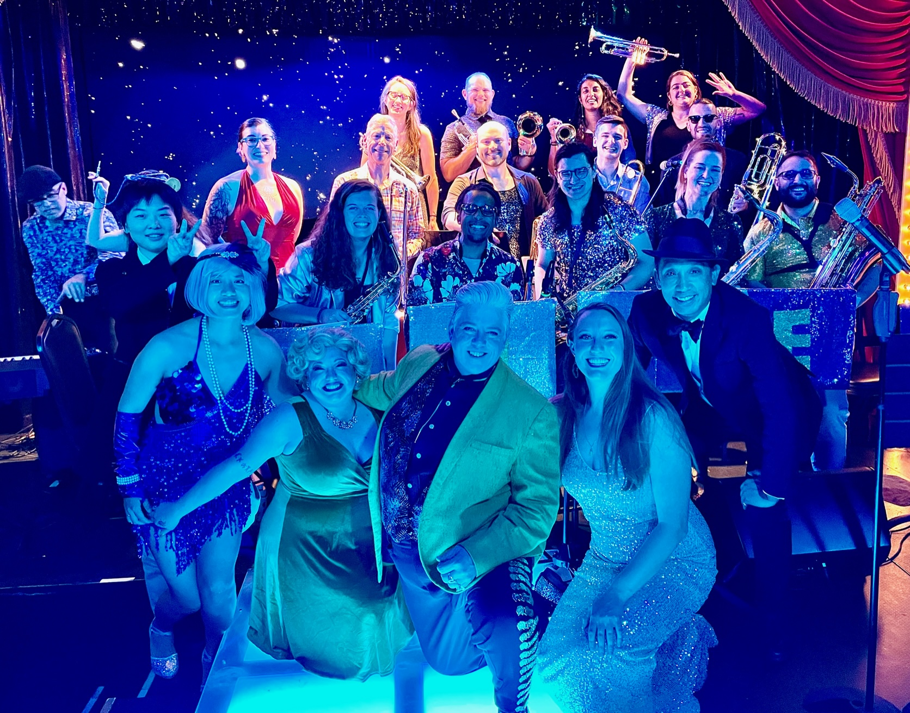

Meet The Super Super
The Super Super is an LGBT+ big band founded in 2022. We play as a 17 piece jazz orchestra, orchestra with vocalists, or as small as a three piece combo. Our goals are to bring excellect performances to the public, create learning and development opportunities for musicians, and increase visibility of the LGBT+ community. We are self-contained and can put on a fantastic performance in any venue.
We are super excited about sharing our art with audiences in San Francisco and beyond, and about sharing our message of music, visibility, and pride.
Videos
Contact
Contact our band leader Chris Mills at thesupersupersf@gmail.com or (415) 684-8439.